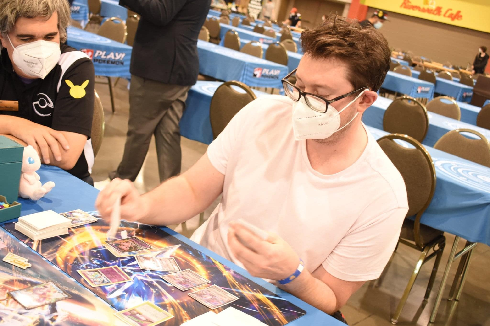

As a lifelong tcg player, I found success in Yugioh! at an early age with multiple Regional wins and YCS top 16 finishes. Recently I have rekindled that love for card games with the Pokemon TCG and found success, finishing top 4 at Milwaukee Regionals this past June. Pokemon is as much nostalgia for me as anything, remembering the fun I had as a kid trading cards and playing the game. I am excited to share my journey in Pokemon with you!
